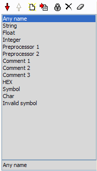

All styles and rules are items derived from the same base class, so working with list is common for them.
|  |
Each item in list have unique name and index. Commands:
|
All rule classes are derived from same base class. In this class special conditions for rule enabling are defined.
You can enable rule only within (out) some block.
Parent block - block rule of opened text range (when rule is being checked) that is verified for presence.
Strict parent block - flag that specifies that parent block must be immediate parent for the rule.
Not a parent - flag that specifies that "parent block" is not a parent of the rule.
Example:
implementation const y: integer = 5; function A; |
start of "implementation" range token detection for "const" start of "function" range token detection for "var" start of "begin" range start of "case" range start of "begin" range (second) end of "begin" range (second) end of "case" range end of "begin" range, end of "function" range |
For the detection "var" range "implementation" is a parent, but not a strint parent, range "function" is parent and strict parent.
For "function" range detecting you can specify parent "implementation". If you set strict parent flag, nested functions will not be detected. Such restrictions will work only in units (where "implementation" section is present). Or you may specify that "function" range have not a "interface" parent (set flag "not a parent") in this case function will be detected not only in units but in programm file or in scripts.
Always enabled - flag that specifies that this rule will be active not only in the current lexer but in the nested lexers too.
For example, in Pascal function we have "asm" range with reference to nested "Assembler" lexer. We can specify that "Comment" token rule is always enabled. In this case in the Assembler block Pascal comments will be highlighted correctly, otherwise this rule will be inaccessible in Assembler block.